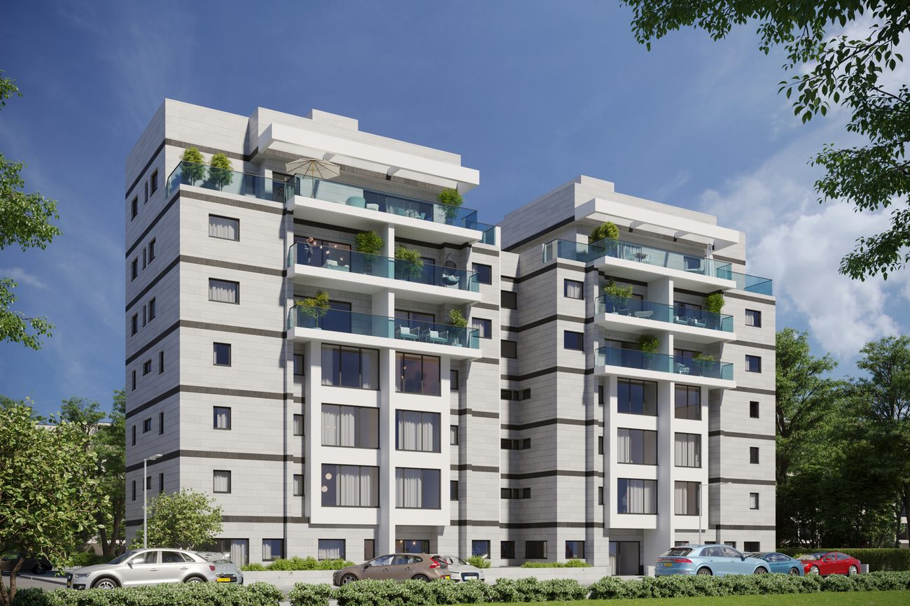

מחזירים למבנים הוותיקים חיים — חידוש, חיזוק ושדרוג לסטנדרט מודרני ובטוח, תוך ניצול מיטבי של השטח ושיפור תשתיות העיר.
תהליך ההתחדשות העירונית נועד לשפר את איכות החיים של התושבים על ידי חידוש, חיזוק ושדרוג הבניינים הוותיקים. המטרה שלנו בשלי אורבן היא להביא את המבנים הישנים לסטנדרט בנייה מודרני ובטוח יותר — תוך ניצול מיטבי של השטח ושיפור תשתיות העיר. אנו מלווים את הפרויקט מהרעיון הראשוני ועד מסירת המפתחות, בהקפדה על איכות ושביעות רצון הדיירים בכל שלב.
בדיקה מקיפה של זכויות הבנייה, המצב המשפטי וצרכי הדיירים.
ניהול יעיל של כל האישורים וההליכים מול הגורמים הממשלתיים והעירוניים.
עבודה עם מיטב המומחים באדריכלות, הנדסה ועיצוב, בחומרים איכותיים ובסטנדרטים מחמירים.
מחלקת קשרי הלקוחות מלווה את הדיירים עד למסירה מושלמת של הדירות.
בדקו את פוטנציאל ההתחדשות של המתחם שלכם · 08-862-3366